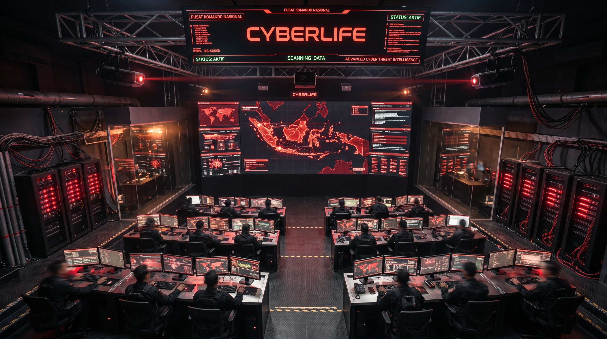

Pusat Komando Siber Nasional
CYBERLIFE bukan sekadar perusahaan keamanan siber biasa; kami adalah benteng digital terakhir bagi kedaulatan informasi Republik Indonesia. Didirikan di bawah mandat khusus, CYBERLIFE memikul tanggung jawab absolut untuk melindungi, mengenkripsi, dan memelihara seluruh ekosistem data strategis nasional dari ancaman asimetris global. Misi kami didorong oleh satu tujuan mutlak: perlindungan absolut terhadap informasi tanpa kompromi.
Tugas utama kami adalah mengamankan seluruh aset penting negara dari intaian musuh. Ini mencakup arsip intelijen tingkat tinggi, cetak biru pertahanan militer, infrastruktur finansial makroekonomi, hingga identitas digital biometrik dari ratusan juta warga negara. Setiap byte informasi yang masuk ke dalam jaringan kami akan dipecah, disandikan ulang, dan disebar melalui protokol desentralisasi yang tidak memiliki titik kegagalan tunggal (zero single point of failure). Kami memastikan bahwa tidak ada satupun informasi vital yang jatuh ke tangan pihak tak bertanggung jawab.
Sistem kami dipacu oleh Nexus-AI, sebuah kecerdasan buatan otonom generasi ketujuh yang memiliki kemampuan machine learning prediktif. Nexus-AI tidak hanya mendeteksi serangan, tetapi menganalisis anomali sebelum ancaman tersebut bermanifestasi. Kami mengimplementasikan teknologi enkripsi tingkat kuantum (Quantum-Grade Encryption) bersertifikasi militer yang membuat data mustahil diretas oleh komputasi konvensional. Selama 24 jam sehari, ribuan analis ancaman siber elit kami bekerja bersisian dengan AI pengawas yang tidak pernah tidur dan tidak pernah lengah.
Bagi CYBERLIFE, margin kesalahan adalah nol. Kami dirancang untuk menahan gempuran serangan siber skala global secara serentak, membentengi kedaulatan digital bangsa menuju era masa depan yang tak tersentuh oleh ancaman.
INFRASTRUKTUR & FASILITAS

Pusat Data Kuantum
Fasilitas penyimpanan data terdalam yang dibangun 50 meter di bawah permukaan tanah dengan perlindungan bunker anti-radiasi elektromagnetik (EMP). Dilengkapi dengan server berlapis paduan khusus, enkripsi tingkat militer (AES-4096-CTR), dan sistem pendingin aktif berbasis nitrogen cair yang memastikan stabilitas operasional pada beban komputasi ekstrem tanpa henti.

Pusat Komando Utama
Saraf pusat operasi siber nasional. Ruangan ini dilengkapi pemantauan lalu lintas data global secara real-time. Tim analis intelijen ancaman (Threat Intelligence) elit kami bekerja dalam sinkronisasi dengan algoritma AI untuk melakukan pencegatan, netralisasi malware, dan pelacakan balik (trace-back) terhadap IP peretas di seluruh dunia dalam hitungan milidetik.

Protokol Pertahanan
Menggunakan arsitektur Intrusion Prevention System (IPS) dinamis dan firewall mutasi polimorfik. Sistem ini secara otomatis menulis ulang struktur pertahanannya setiap 3 detik. Kemampuan adaptasi ekstrem ini membuat senjata siber tercanggih sekalipun, termasuk Zero-Day Exploit dan agresi DDoS berskala masif, hancur sebelum menyentuh gerbang perimeter luar jaringan.